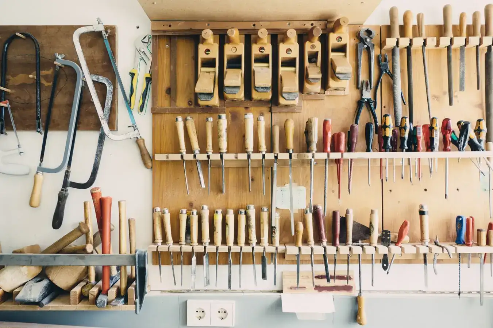
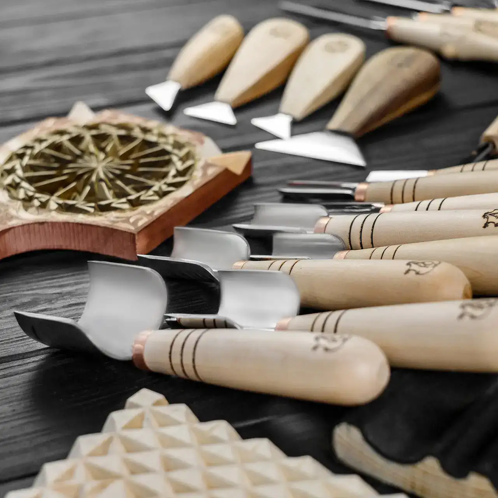
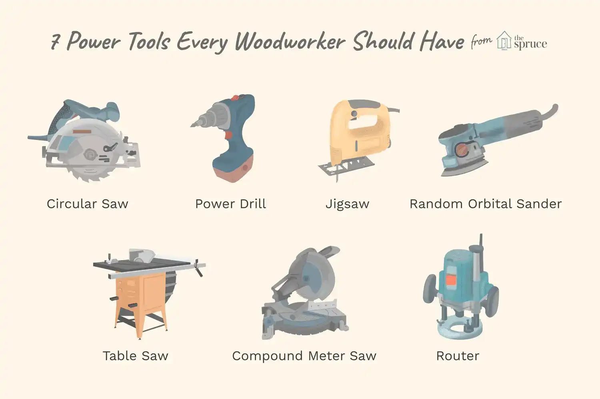

Wood working tools
Two main kinds of tools
Woodworking tools can be divided into two categories: hand tools and power tools. Hand tools include such things as hammers, screws, chisels, and saws. Power tools include drills, saws, and other types of machines that can cut wood.
Hand tools
These tools are manually operated, allowing artisans to refine and transform raw wood into intricate and functional pieces. A diverse array of hand tools exists, each serving a specific purpose in the woodworking process. Common tools include saws for cutting wood, chisels for carving and shaping, planes for smoothing surfaces, and hammers for driving and removing nails. Screwdrivers, measuring tools like rulers and tape measures, and marking tools such as pencils and marking gauges are also vital. Woodworkers rely on the precision and control afforded by these hand tools, showcasing the craftsmanship and skill inherent in the age-old art of woodworking.
Power tools
These tools are designed to save time and effort while providing precision and versatility. Common power tools include the circular saw, which excels at straight cuts; the jigsaw, ideal for curved or intricate patterns; and the router, used for shaping edges and creating decorative details. Sanders are employed to achieve smooth surfaces, while the power drill aids in drilling holes and driving screws. The miter saw ensures accurate angle cuts, while the planer and jointer are essential for achieving flat and straight surfaces. Woodworkers often utilize a table saw for various cuts and a band saw for intricate curves. Additionally, the lathe allows for turning wood for rounded shapes. Each tool serves a specific purpose, collectively empowering woodworkers to bring their creative visions to life with efficiency and precision.